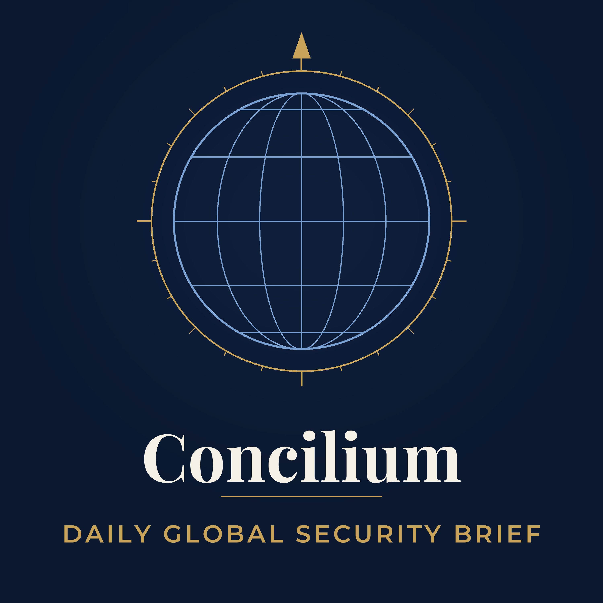

Five-minute daily brief on global security risks for overseas travel
Five-minute daily brief on global security risks for overseas travel. Each episode covers security developments from the last 24 hours: travel advisories, conflict, terrorism, kidnapping, cyber, health and disaster reporting, sourced from government travel advisories and trusted security analysts. Curated by the Concilium Security Risk Management Team for organizations and travelers working overseas, with travel security and duty of care in mind and every item sourced. Digitally narrated. Questions? Reach Concilium at info@concilium.us.
Podcast RSS feed: https://gitdonenow.github.io/concilium-security-brief/feed.xml
Contact: info@concilium.us